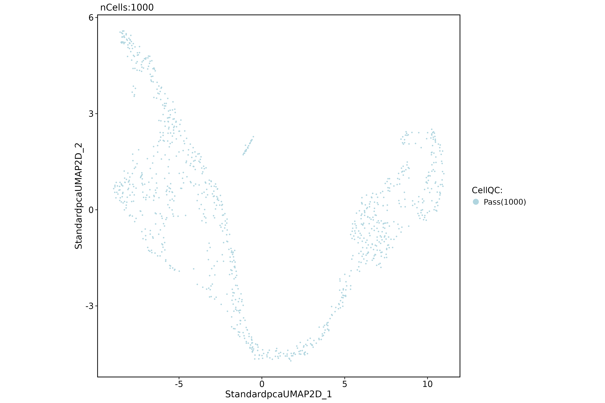
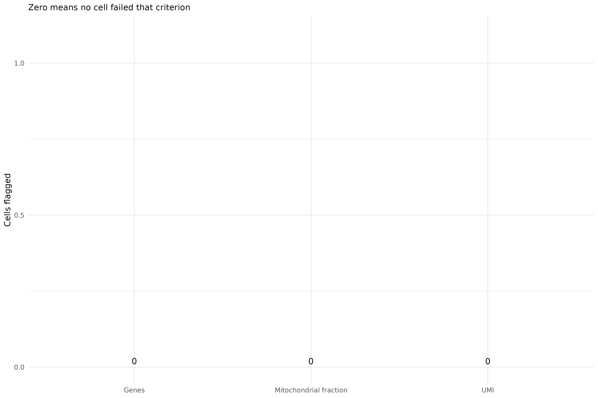
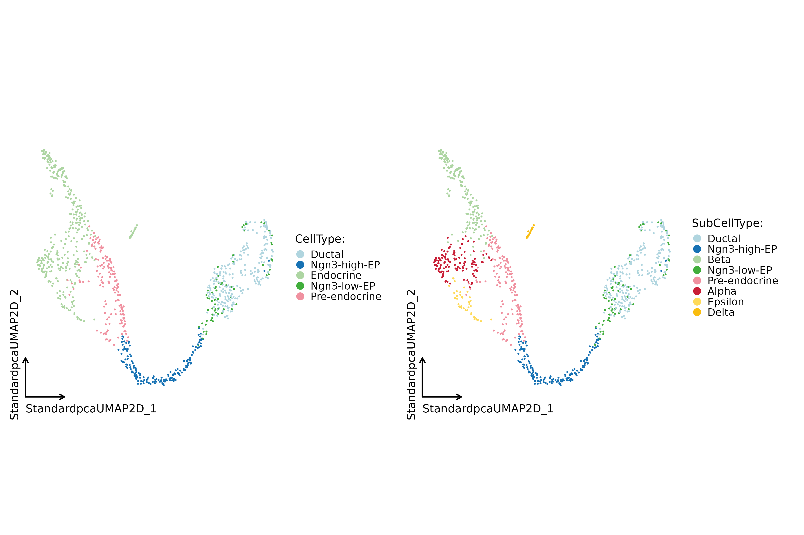
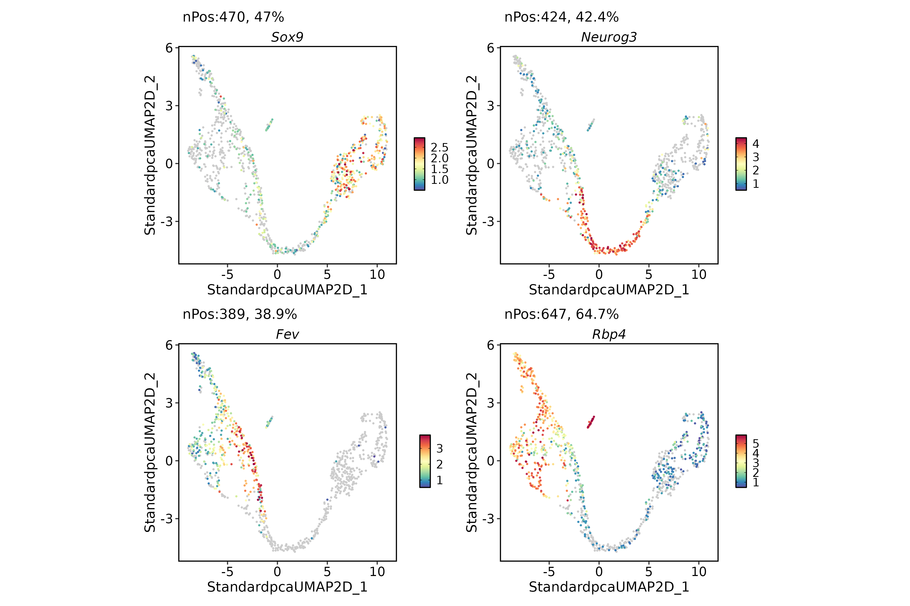
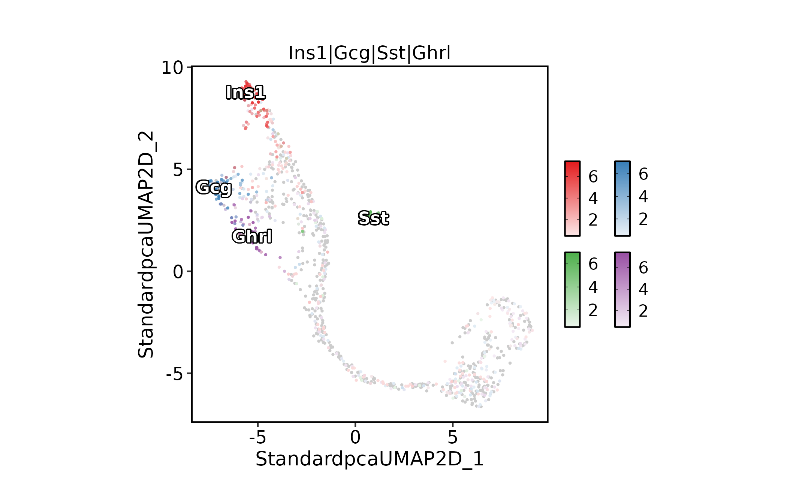
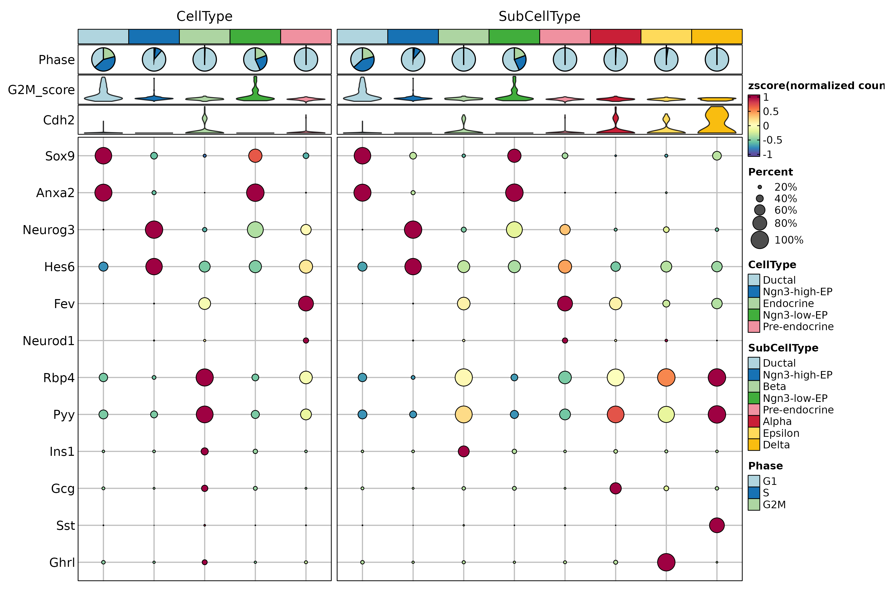

Single-cell main workflow
Source:vignettes/single-cell-main-workflow.Rmd
single-cell-main-workflow.RmdWhat you will do
- Question: can I trust the input and recognize its main cell states?
- Input: All 1,000 cells and 15,998 supplied genes in the bundled mouse pancreas object. The package dataset is already a subset of the study; this article does not sample it again.
- Output: QC flags, normalized RNA, PCA/UMAP, clusters, marker plots and a reloadable object.
- How to run: start a fresh R session and run the chunks in order. Printed tables and figures below are generated from that run; code-only alternatives are identified explicitly.
Start here before integration, annotation, trajectories or pathway analysis. The counts and QC tables establish what was measured; marker plots check the meaning of labels; the saved object is the input for the specialist articles.
Load and Inspect the Object
The examples use the bundled mouse pancreas subset. It contains RNA, spliced, and unspliced assays, so the same object can later be used for trajectory and RNA-velocity examples.
library(scop)
set.seed(11)
data(pancreas_sub)
pancreas_sub
#> An object of class Seurat
#> 47994 features across 1000 samples within 3 assays
#> Active assay: RNA (15998 features, 0 variable features)
#> 1 layer present: counts
#> 2 other assays present: spliced, unspliced
input_cells <- colnames(pancreas_sub)
counts <- GetAssayData5(pancreas_sub, assay = "RNA", layer = "counts")
stopifnot(identical(colnames(counts), rownames(pancreas_sub@meta.data)),
!anyDuplicated(colnames(counts)), all(counts@x >= 0))
data.frame(genes = nrow(counts), cells = ncol(counts),
mitochondrial_genes = sum(grepl("^mt-", rownames(counts))))
#> genes cells mitochondrial_genes
#> 1 15998 1000 10Before running a full workflow, check the active assay, available assays, metadata columns, and whether a previous dimensional reduction already exists. These checks prevent a common documentation mistake: plotting a reduction or metadata column left over from a previous run without stating where it came from.
SeuratObject::DefaultAssay(pancreas_sub)
#> [1] "RNA"
SeuratObject::Assays(pancreas_sub)
#> [1] "RNA" "spliced" "unspliced"
head(pancreas_sub@meta.data)
#> orig.ident nCount_RNA nFeature_RNA S_score G2M_score
#> AAACCTGAGCCTTGAT SeuratProject 7071 2613 -0.01470664 -0.2326104
#> AAACCTGGTAAGTGGC SeuratProject 5026 2211 -0.17998111 -0.1260295
#> AAACGGGAGATATGGT SeuratProject 6194 2486 -0.16794573 -0.1666881
#> AAACGGGCAAAGAATC SeuratProject 6370 2581 -0.17434505 -0.2216024
#> AAACGGGGTACAGTTC SeuratProject 9182 2906 -0.18656224 -0.1571970
#> AAACGGGTCAGCTCTC SeuratProject 5892 2282 -0.12347911 -0.2298337
#> nCount_spliced nFeature_spliced nCount_unspliced
#> AAACCTGAGCCTTGAT 7071 2613 953
#> AAACCTGGTAAGTGGC 5026 2211 1000
#> AAACGGGAGATATGGT 6194 2486 721
#> AAACGGGCAAAGAATC 6370 2581 1544
#> AAACGGGGTACAGTTC 9182 2906 2262
#> AAACGGGTCAGCTCTC 5892 2282 935
#> nFeature_unspliced CellType SubCellType Phase
#> AAACCTGAGCCTTGAT 638 Ductal Ductal G1
#> AAACCTGGTAAGTGGC 623 Ngn3-high-EP Ngn3-high-EP G1
#> AAACGGGAGATATGGT 550 Ductal Ductal G1
#> AAACGGGCAAAGAATC 1015 Endocrine Beta G1
#> AAACGGGGTACAGTTC 1096 Endocrine Beta G1
#> AAACGGGTCAGCTCTC 712 Ngn3-low-EP Ngn3-low-EP G1
SeuratObject::Reductions(pancreas_sub)
#> NULLRun the Standard Workflow
RunStandardWorkflow() runs the common preprocessing
path: normalization, variable feature selection, scaling, dimensional
reduction, neighbor graph construction, clustering, and UMAP. The result
stays in the same Seurat object.
pancreas_sub <- RunStandardWorkflow(
pancreas_sub,
assay = "RNA",
nHVF = 2000,
linear_reduction_dims = 50,
cluster_resolution = 0.8,
seed = 11,
cores = 1,
verbose = FALSE
)
pancreas_sub
#> An object of class Seurat
#> 47994 features across 1000 samples within 3 assays
#> Active assay: RNA (15998 features, 2000 variable features)
#> 3 layers present: counts, data, scale.data
#> 2 other assays present: spliced, unspliced
#> 3 dimensional reductions calculated: Standardpca, StandardpcaUMAP2D, StandardUMAP2D
SeuratObject::Reductions(pancreas_sub)
#> [1] "Standardpca" "StandardpcaUMAP2D" "StandardUMAP2D"The stable contract is the Seurat object itself: normalized
expression layers are stored in the assay, reductions are stored in
@reductions, metadata columns are added to
@meta.data, and method-specific summaries are stored under
@tools when a wrapper has additional results.
For this object, CellType is a coarse biological label
and SubCellType contains finer developmental states. Those
labels are useful for examples, but they should still be checked with
marker genes before being used for biological claims.
Check Cell Quality
Run quality control before interpreting clusters. This first pass measures UMIs, detected genes and mitochondrial fraction on the supplied RNA counts. It annotates every cell, without silently removing failures. The object is already feature-filtered: these totals are not original-library QC. Doublet and ambient-RNA models require separate dependencies and are not part of this basic receipt. For production data, run QC on the unfiltered count assay, justify thresholds and rerun preprocessing after any filtering.
pancreas_sub <- RunCellQC(
pancreas_sub, assay = "RNA",
qc_metrics = c("umi", "gene", "mito"),
UMI_threshold = 3000, gene_threshold = 1000, mito_threshold = 20,
return_filtered = FALSE, verbose = FALSE
)
stopifnot(identical(colnames(pancreas_sub), input_cells))
table(pancreas_sub$CellQC)
#>
#> Pass Fail
#> 1000 0
names(pancreas_sub@tools)
#> NULL
data.frame(
criterion = c("umi_qc", "gene_qc", "mito_qc"),
failures = vapply(pancreas_sub@meta.data[c("umi_qc", "gene_qc", "mito_qc")],
function(x) sum(x == "Fail", na.rm = TRUE), integer(1))
)
#> criterion failures
#> umi_qc umi_qc 0
#> gene_qc gene_qc 0
#> mito_qc mito_qc 0Plot the final QC label first, then inspect the individual failure categories when too many cells fail.
CellDimPlot(
pancreas_sub,
group.by = "CellQC",
reduction = "UMAP"
)
qc_failures <- data.frame(
metric = c("UMI", "Genes", "Mitochondrial fraction"),
failures = vapply(pancreas_sub@meta.data[c("umi_qc", "gene_qc", "mito_qc")],
function(x) sum(x == "Fail", na.rm = TRUE), integer(1))
)
ggplot2::ggplot(qc_failures, ggplot2::aes(metric, failures)) +
ggplot2::geom_col() +
ggplot2::geom_text(ggplot2::aes(label = failures), vjust = -0.5) +
ggplot2::scale_y_continuous(limits = c(0, max(1, qc_failures$failures) * 1.1),
breaks = scales::breaks_pretty(n = 4)) +
ggplot2::labs(x = NULL, y = "Cells flagged",
subtitle = "Zero means no cell failed that criterion") +
ggplot2::theme_minimal(base_size = 12)
Plot Cell Groups and Features
Use CellDimPlot() to inspect discrete annotations and
cluster structure. FeatureDimPlot() is the companion for
gene expression or metadata-derived numeric features.
CellDimPlot(
pancreas_sub,
group.by = c("CellType", "SubCellType"),
reduction = "UMAP",
label = FALSE, theme_use = "theme_blank"
)
FeatureDimPlot(
pancreas_sub,
features = c("Sox9", "Neurog3", "Fev", "Rbp4"),
reduction = "UMAP"
)
When several marker genes define related states,
compare_features = TRUE blends feature-specific colours to
show overlapping expression. It does not identify the highest-abundance
gene or assign a cell type. In the pancreas example, Ins1,
Gcg, Sst, and Ghrl are hormone
genes used to distinguish beta, alpha, delta, and epsilon endocrine
states.
FeatureDimPlot(
pancreas_sub,
features = c("Ins1", "Gcg", "Sst", "Ghrl"),
compare_features = TRUE,
label = TRUE,
reduction = "UMAP"
)
#> Warning: No shared levels found between `names(values)` of the manual scale and the
#> data's colour values.
Summarize Marker Patterns by Group
Use grouped heatmaps after the embedding looks coherent. This is usually more readable than inspecting many feature plots one by one. Here dot size summarizes the fraction of cells expressing each marker. Colour shows row-standardized group-average expression: compare groups within a gene, not absolute expression between genes. A marker should be interpreted from both signals: strong average expression in very few cells is different from broad expression across a group.
ht <- GroupHeatmap(
pancreas_sub,
features = c(
"Sox9", "Anxa2",
"Neurog3", "Hes6",
"Fev", "Neurod1",
"Rbp4", "Pyy",
"Ins1", "Gcg", "Sst", "Ghrl"
),
group.by = c("CellType", "SubCellType"),
heatmap_palette = "Spectral",
cell_annotation = c("Phase", "G2M_score", "Cdh2"),
show_row_names = TRUE, nlabel = 0,
row_names_side = "left",
add_dot = TRUE,
add_reticle = TRUE
)
#> Warning: No shared levels found between `names(values)` of the manual scale and the
#> data's colour values.
#> No shared levels found between `names(values)` of the manual scale and the
#> data's colour values.
#> No shared levels found between `names(values)` of the manual scale and the
#> data's colour values.
#> No shared levels found between `names(values)` of the manual scale and the
#> data's colour values.
#> No shared levels found between `names(values)` of the manual scale and the
#> data's colour values.
#> No shared levels found between `names(values)` of the manual scale and the
#> data's colour values.
#> No shared levels found between `names(values)` of the manual scale and the
#> data's colour values.
#> No shared levels found between `names(values)` of the manual scale and the
#> data's colour values.
#> No shared levels found between `names(values)` of the manual scale and the
#> data's colour values.
#> No shared levels found between `names(values)` of the manual scale and the
#> data's colour values.
#> No shared levels found between `names(values)` of the manual scale and the
#> data's colour values.
#> No shared levels found between `names(values)` of the manual scale and the
#> data's colour values.
#> No shared levels found between `names(values)` of the manual scale and the
#> data's colour values.
#> No shared levels found between `names(values)` of the manual scale and the
#> data's colour values.
#> No shared levels found between `names(values)` of the manual scale and the
#> data's colour values.
#> No shared levels found between `names(values)` of the manual scale and the
#> data's colour values.
#> No shared levels found between `names(values)` of the manual scale and the
#> data's colour values.
#> No shared levels found between `names(values)` of the manual scale and the
#> data's colour values.
#> No shared levels found between `names(values)` of the manual scale and the
#> data's colour values.
#> No shared levels found between `names(values)` of the manual scale and the
#> data's colour values.
#> No shared levels found between `names(values)` of the manual scale and the
#> data's colour values.
#> No shared levels found between `names(values)` of the manual scale and the
#> data's colour values.
#> No shared levels found between `names(values)` of the manual scale and the
#> data's colour values.
#> No shared levels found between `names(values)` of the manual scale and the
#> data's colour values.
#> No shared levels found between `names(values)` of the manual scale and the
#> data's colour values.
#> No shared levels found between `names(values)` of the manual scale and the
#> data's colour values.
print(ht$plot)
Save, reload, and check the hand-off
The build uses a temporary directory so repeated rendering cannot overwrite a previous analysis. For your work, replace it with a new persistent output folder. Save the object and plain-text metadata; a figure alone cannot reproduce the analysis. No cells are sampled for this export.
output_dir <- file.path(tempdir(), "single-cell-main-workflow")
dir.create(output_dir, recursive = TRUE, showWarnings = FALSE)
result_file <- file.path(output_dir, "analysis.rds")
saveRDS(pancreas_sub, result_file)
utils::write.csv(pancreas_sub@meta.data, file.path(output_dir, "cell-metadata.csv"))
reloaded <- readRDS(result_file)
stopifnot(identical(colnames(reloaded), colnames(pancreas_sub)),
identical(reloaded@meta.data, pancreas_sub@meta.data),
identical(SeuratObject::Reductions(reloaded),
SeuratObject::Reductions(pancreas_sub)))
data.frame(file = basename(list.files(output_dir, full.names = TRUE)),
bytes = file.info(list.files(output_dir, full.names = TRUE))$size)
#> file bytes
#> 1 analysis.rds 34271763
#> 2 cell-metadata.csv 236267Use your own data and recover common errors
- Replace the
data(...)input withreadRDS("your-object.rds"), or create a Seurat object from a gene-by-cell raw-count matrix. Check that cell IDs are unique and metadata row names equal the expression column names. - Set the assay and grouping columns explicitly. Species, gene identifiers and reference labels must match your experiment; do not copy pancreas labels to unrelated tissue.
- If a reduction or metadata column is missing, inspect
SeuratObject::Reductions(object)andcolnames(object@meta.data), then run its producer chunk. A plot does not create the result it needs. - If a dependency is unavailable, install it in the analysis environment, restart R and rerun from the input chunk. A skipped or failed method is not evidence that it worked. Preserve warnings and the exact error in your report.
Build and analysis provenance
The receipt records the R seed. Python methods retain their documented backend seeds and parameters; setting the R seed alone does not control every backend. Package versions, BLAS libraries and backend changes can alter numerical results. Keep this receipt with the exported object. It describes this page’s actual render.
source_revision <- Sys.getenv("GITHUB_SHA")
if (!nzchar(source_revision) && nzchar(Sys.which("git"))) {
source_revision <- tryCatch(system2("git", c("rev-parse", "HEAD"), stdout = TRUE,
stderr = FALSE)[1], error = function(e) NA_character_)
}
article_source <- knitr::current_input(dir = TRUE)
build_receipt <- data.frame(
article = "single-cell-main-workflow",
built_utc = format(Sys.time(), tz = "UTC", usetz = TRUE),
scop = as.character(utils::packageVersion("scop")),
R = as.character(getRversion()),
source_revision = source_revision,
source_has_local_changes = if (nzchar(Sys.which("git")))
length(system2("git", c("status", "--porcelain"), stdout = TRUE, stderr = FALSE)) > 0 else NA,
article_md5 = unname(tools::md5sum(article_source)),
R_seed = 11,
cells_retained = ncol(pancreas_sub),
genes_in_active_assay = nrow(pancreas_sub),
stringsAsFactors = FALSE
)
build_receipt
#> article built_utc scop R
#> 1 single-cell-main-workflow 2026-10-10 12:10:03 UTC 0.9.2 4.6.1
#> source_revision source_has_local_changes
#> 1 151e7134c597a318db23aacdc01739f82fa44758 FALSE
#> article_md5 R_seed cells_retained genes_in_active_assay
#> 1 4a1ee311c579f65687c419c549b23216 11 1000 15998
utils::write.csv(build_receipt, file.path(output_dir, "build-receipt.csv"),
row.names = FALSE)
writeLines(capture.output(sessionInfo()), file.path(output_dir, "session-info.txt"))Show the complete R session used for this page
sessionInfo()
#> R version 4.6.1 (2026-06-24)
#> Platform: x86_64-pc-linux-gnu
#> Running under: Ubuntu 24.04.5 LTS
#>
#> Matrix products: default
#> BLAS: /usr/lib/x86_64-linux-gnu/openblas-pthread/libblas.so.3
#> LAPACK: /usr/lib/x86_64-linux-gnu/openblas-pthread/libopenblasp-r0.3.26.so; LAPACK version 3.12.0
#>
#> locale:
#> [1] LC_CTYPE=C.UTF-8 LC_NUMERIC=C LC_TIME=C.UTF-8
#> [4] LC_COLLATE=C.UTF-8 LC_MONETARY=C.UTF-8 LC_MESSAGES=C.UTF-8
#> [7] LC_PAPER=C.UTF-8 LC_NAME=C LC_ADDRESS=C
#> [10] LC_TELEPHONE=C LC_MEASUREMENT=C.UTF-8 LC_IDENTIFICATION=C
#>
#> time zone: UTC
#> tzcode source: system (glibc)
#>
#> attached base packages:
#> [1] stats graphics grDevices utils datasets methods base
#>
#> other attached packages:
#> [1] scop_0.9.2
#>
#> loaded via a namespace (and not attached):
#> [1] RColorBrewer_1.1-3 jsonlite_2.0.0 shape_1.4.6.1
#> [4] magrittr_2.0.5 spatstat.utils_3.2-5 farver_2.1.2
#> [7] rmarkdown_2.32 GlobalOptions_0.1.4 fs_2.1.0
#> [10] ragg_1.5.2 vctrs_0.7.3 ROCR_1.0-12
#> [13] Rsamtools_2.28.0 spatstat.explore_3.8-3 RcppRoll_0.4.0
#> [16] htmltools_0.5.9 sass_0.4.10 thisutils_0.5.2
#> [19] sctransform_0.4.3 parallelly_1.48.0 KernSmooth_2.23-26
#> [22] bslib_0.12.0 htmlwidgets_1.6.4 desc_1.4.3
#> [25] ica_1.0-3 plyr_1.8.9 plotly_4.12.1
#> [28] zoo_1.9-1 cachem_1.1.0 igraph_2.3.4
#> [31] mime_0.13 lifecycle_1.0.5 iterators_1.0.14
#> [34] pkgconfig_2.0.3 Matrix_1.7-5 R6_2.6.1
#> [37] fastmap_1.2.0 MatrixGenerics_1.24.0 fitdistrplus_1.2-6
#> [40] future_1.76.0 shiny_1.14.0 clue_0.3-68
#> [43] digest_0.6.39 thisplot_0.4.6 ggnewscale_0.5.2
#> [46] colorspace_2.1-3 patchwork_1.3.2 S4Vectors_0.50.3
#> [49] Seurat_5.6.0 tensor_1.5.1 RSpectra_0.16-2
#> [52] irlba_2.3.7 GenomicRanges_1.64.0 textshaping_1.0.5
#> [55] labeling_0.4.3 progressr_1.0.0 spatstat.sparse_3.2-0
#> [58] httr_1.4.9 polyclip_1.10-7 abind_1.4-8
#> [61] compiler_4.6.1 withr_3.0.3 doParallel_1.0.17
#> [64] S7_0.2.2 BiocParallel_1.46.0 fastDummies_1.7.6
#> [67] ggforce_0.5.0 MASS_7.3-65 proxyC_0.5.2
#> [70] rjson_0.2.23 tools_4.6.1 lmtest_0.9-40
#> [73] otel_0.2.0 httpuv_1.6.17 future.apply_1.20.2
#> [76] goftest_1.2-3 glue_1.8.1 nlme_3.1-169
#> [79] promises_1.5.0 grid_4.6.1 Rtsne_0.17
#> [82] cluster_2.1.8.2 reshape2_1.4.5 generics_0.1.4
#> [85] gtable_0.3.6 spatstat.data_3.1-9 tidyr_1.3.2
#> [88] data.table_1.18.6.1 XVector_0.52.0 sp_2.2-3
#> [91] BiocGenerics_0.58.1 spatstat.geom_3.8-3 RcppAnnoy_0.0.23
#> [94] ggrepel_0.9.8 RANN_2.6.3 foreach_1.5.2
#> [97] pillar_1.11.1 stringr_1.6.0 spam_2.11-4
#> [100] RcppHNSW_0.7.0 later_1.4.8 circlize_0.4.18
#> [103] splines_4.6.1 tweenr_2.0.3 dplyr_1.2.1
#> [106] lattice_0.22-9 survival_3.8-6 deldir_2.0-4
#> [109] tidyselect_1.2.1 ComplexHeatmap_2.28.0 Biostrings_2.80.2
#> [112] miniUI_0.1.2 pbapply_1.7-5 knitr_1.52
#> [115] gridExtra_2.3.1 Seqinfo_1.2.0 IRanges_2.46.0
#> [118] scattermore_1.2 stats4_4.6.1 xfun_0.61
#> [121] matrixStats_1.5.0 UCSC.utils_1.8.0 stringi_1.8.9
#> [124] yaml_2.3.12 evaluate_1.0.5 codetools_0.2-20
#> [127] tibble_3.3.1 cli_3.6.6 uwot_0.2.5
#> [130] RcppParallel_6.2.1 Signac_1.17.1 xtable_1.8-8
#> [133] reticulate_1.47.0 systemfonts_1.3.2 jquerylib_0.1.4
#> [136] GenomeInfoDb_1.48.0 Rcpp_1.1.2 globals_0.19.1
#> [139] spatstat.random_3.5-2 png_0.1-9 spatstat.univar_3.2-0
#> [142] parallel_4.6.1 pkgdown_2.2.1 ggplot2_4.0.3
#> [145] dotCall64_1.2 sparseMatrixStats_1.24.0 bitops_1.1-0
#> [148] listenv_1.1.0 viridisLite_0.4.3 scales_1.4.0
#> [151] ggridges_0.5.7 SeuratObject_5.4.0 purrr_1.2.2
#> [154] crayon_1.5.3 GetoptLong_1.1.1 rlang_1.3.0
#> [157] fastmatch_1.1-8 cowplot_1.2.0What to Report
A compact first-pass report should include:
- the object source, assay, and expression layer used;
- the cell and feature counts before and after filtering;
- the preprocessing parameters that affect interpretation, especially variable features, PCs, clustering resolution, and UMAP reduction name;
- QC pass or fail summaries and the dominant failure categories;
- the annotation column used for plots and any marker genes used to validate it;
- the output locations used downstream: assay layers, reductions,
metadata, and
srt@tools.
Keep this article as the short entry point. Use the specialized articles for batch integration, annotation transfer, trajectories, differential expression, pathway analysis, and deployment.